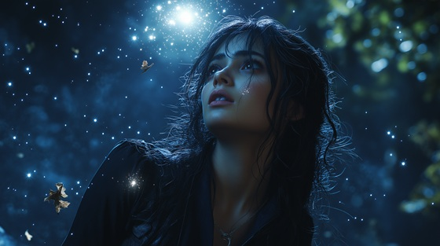

Callisto, a nymph devoted to Artemis, swore chastity and the hunt. But Zeus, disguising himself, either seduced or assaulted her. When her pregnancy was revealed, Artemis cast her out in fury.
Callisto was transformed into a bear, doomed to wander the woods in isolation. Yet in pity, Zeus later placed her among the stars as Ursa Major—the Great Bear—forever visible in the northern skies. This song captures Callisto's anguish, betrayal, and her final, luminous defiance: a soul who could not be erased, shining coldly and eternally above the world that wronged her.
Callisto, a nymph devoted to Artemis, swore chastity and the hunt. But Zeus, disguising himself, either seduced or assaulted her. When her pregnancy was revealed, Artemis cast her out in fury.
Callisto was transformed into a bear, doomed to wander the woods in isolation. Yet in pity, Zeus later placed her among the stars as Ursa Major—the Great Bear—forever visible in the northern skies.
This song captures Callisto's anguish, betrayal, and her final, luminous defiance: a soul who could not be erased, shining coldly and eternally above the world that wronged her.
The Bear Star
I swore the bow, I swore the sky
I swore no man would draw me nigh
Yet in his guise, a hunter’s tread—
He stole the oath my spirit bled
No prayer could hold, no vow could stay—
The god who wears the beast’s array
Bear star, torn sky
I roam the cold where angels cry
No hand to heal, no song to save—
I wear the stars above my grave
She cursed my womb, she cursed my name
The sisterhood I could not claim
Alone I fled, alone I bore—
The child of wrath the heavens wore
No temple grants, no silence mends—
The night where oaths and sorrows end
Bear star, torn sky
I roam the cold where angels cry
No hand to heal, no song to save—
I wear the stars above my grave
Yet mercy cast me not to stone—
But raised my scars to midnight's throne
Above the hunters, above the flame—
I burn forever through the shame
“Not even gods can unmake what they have named.”
Bear star, torn sky
I shine where broken angels fly
The winds may howl, the wolves may rave—
But I will blaze beyond the grave
Callisto’s cry, the night’s embrace—
A wounded light time can't erase